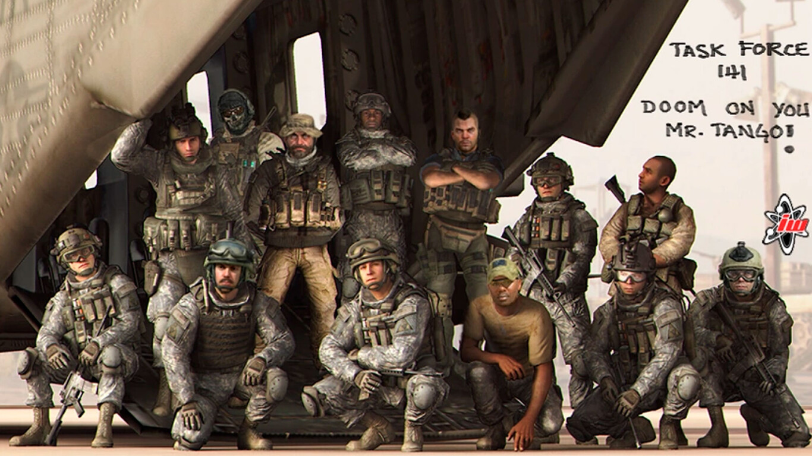

Fundación
Según se puede ver, la idea de crear la Fuerza fue de John "Soap" MacTavish, quién contactó con el General Sheperd, Comandante de las Fuerzas de EE.UU. en el Medio Oriente, para que se convirtiera en el Comandante de la Fuerza. Él evaluó reclutas de los Rangers del Ejército de EE.UU, del Servicio Aéreo Especial y del Regimiento de Operaciones Especiales Canadienses. La Fuerza Operativa 141 participa en conjunto con la Fuerza Delta de la persecusión de un objetivo con el nombre de la operación, donde al revisar una casa descubren que en realidad, el objetivo de Kingfish era Bravo 6. Luego, un explosivo escondido debajo de la mesa estalla por lo que todos escapan y en el escape Soap es herido, y el capitán Price se queda a cubrirlo. Price les dice que se vayan y así sucede. Este es capturado luego de ser rodeado por Ultranacionalistas y es llevado a un gulag, y Soap lo sucede en el cargo de capitán hasta su rescate.
Para poder llevar a cabo todas esas operaciones, tuvieron que hacer diversos trabajos para pagar armamento y munición. La ahora desautorizada Fuerza Operativa 141 recolecta recursos para abastecerse en su misión de matar a Makarov. En primer lugar, trazan los depósitos de armas, las tiendas y las rutas de tráfico utilizadas por la milicia local a cambio de dinero para comprar armas en Pico del Loro, Guinea. A continuación, tienen la tarea como equipo de seguridad de un cliente en Ghana para escoltar 600 kilogramos de oro del Aeropuerto Internacional de Accra a los correos locales a cambio de dinero para comprar más ordenanza, armamento y equipo.